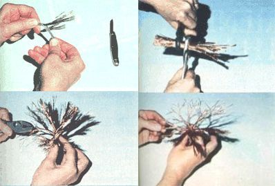

With a few snipped bits of wire and a few twists of the pliers, you can create . . .
Handcrafting lovely trees from bits of scrap wire can be a relaxing, fascinating, and potentially profitable hobby. The little sculptures offer an opportunity for the artist to express his or her love for (and appreciation of) the largest of all plants . . . and even to faithfully mirror the intricate branch patterns that denote specific varieties of trees, the ravages of mountainside winds, or the gnarled stubbornness of age. Furthermore, though the tiny creations fit beautifully into complete miniature scenes, they can also stand alone - perched on a hunk of driftwood or wrapped around an attractive stone - as pieces of decorative artwork!
I've found that the craft intrigues children (including my son Tommy) as well as adults. And - because uncomplicated versions of the wire trees are rather easy to make - the hobby can be used to keep the young ones busy when foul weather forces them to stay indoors . . . and often underfoot.
A NATURE STUDY
Whiling away a little time working with wire can, however, be much more than a child's rainy-day activity. Complicated sculptures that accurately depict living trees require a good understanding of arboreal structure and are usually created by patient, sensitive adult hands. Such finely crafted items make especially pleasing gifts, and can be marketed in stores for handsome prices. (I've seen one 12 inches tall sell for $75! )
Most tree species can be identified, of course, by their characteristic shapes and branching patterns, so - before you start making wire look-alikes - it might be wise to poke your head outside for a close study of the "models" growing in your neighborhood. Then you can let your imagination ( and your gained-through-experience ability to work with tiny metal strands) determine the size and shape your creation should take.
MATERIAL FOR THE ASKING
Although a number of different kinds of wire can be used to craft the miniature trees (picture-hanging "cable" being a notable exception), I prefer 10- to 12-gauge electrical wire for most trees. It's composed of a number of 22- to 24-gauge copper strands enclosed in plastic insulation. ( While tiny three- to five-inch sculptures are usually constructed of 24-gauge wire, trees as tall as 12 inches will be more substantial if made with the slightly thicker 22-gauge material . . . and even heavier strands should be used for trees over one foot in height.)
I've asked a number of electricians to give me their leftover bits of wire, and they've kept me supplied with enough trimmings to twist up a forest! However, if scraps are hard for you to come by, you can either purchase electrical wire (at about 14 cents per foot) or buy single-strand wire, by the spool, at a hardware store. (A small reel of wire, usually costing less than $1.00, contains enough material to make two or three trees, each four to five inches tall.)
It takes a little extra time and patience to sculpt with single-strand wire, because you must cut many individual pieces . . . whereas one length of electrical wire can be unwrapped to yield 19 strands. On the other hand, it's sometimes expedient to use one-piece wire in order to produce certain effects. The black annealed 24-gauge type, as an example, can be used to make a very attractive and sturdy tree that appears to be quite fragile and delicate.
(Besides wire, you'll need wire cutters or tinsnips, a pocketknife, and two pairs of pliers . . . one of which should be the needle-nosed variety.)
THICK AND THIN
After deciding on your sculpture's size and "style", cut a number of wire pieces that are each about half again as long as the tree will be tall. ( If, for example, you plan to make an eight-inch-tall tree, cut the strands 12 inches long.) Most of the extra length will be used to form the root system, but the copper strands will also be shortened as a result of the twisting process.
The height and design of the tree will determine just how many wires must be cut. After all, a sculpture that's only four inches tall can be made to look like either a massive elm or a young, struggling dogwood. It might have a "sapling" trunk of 1/4 inch in diameter or - if it represents a more heavily limbed tree, such as a spreading oak - a 1/2- to 3/4-inch trunk . . . which would mean, of course, that even more separate strands would be needed to produce a tree of the same height.
Obviously, taller trees require larger trunks. A 12-inch hickory, for instance, would need at least a 3/4-inch-thick trunk, although one of 1-1/2 inches would probably produce a more beautiful sculpture. And, because the size of the trunk directly affects both the size of the branches and the intricacy of the branching patterns, thicker ones - which capture the massive complexity we associate with grand old trees - generally result in far more intriguing creations. (The large trunks, however, do require considerably more wire than smaller "stems" . . . thus thicker trees are more expensive to make. On top of that, they're much more difficult to craft. For those reasons I recommend that you start out twisting a thin tree.)
THE TWIST TECHNIOUE
If you plan to use electrical wire for your project, strip off the insulation with a pocketknife . . . cut the wires to length . . . stack them with the ends nearly even . . . and hold them - at a point a little off center - with pliers. Then, using another pair of "grippers", grasp the wires about halfway between the "holder" pliers and the nearest wire ends and twist . . . but not too tightly, as excessive pressure can cause the metal to break. (If the wire bundle is too thick to hold with pliers, you'll have to grip it firmly with your fingers.)
Now, to assure that the trunk doesn't come apart, divide the wires on each end into bundles. The shorter pieces left on one end of the trunk will represent the roots, and they should be separated into thinner bunches than are the longer wires - which will be the limbs - on the other end. Be sure to twist each of the root bundles several times - always in the same direction - to secure the trunk. Next, divide the top of the tree into several large branches and give each one of these a few twists.
With that done, proceed to develop each branch by twisting the wires a few turns, separating the bundles wherever you'd like to form a fork, twisting again, and continuing until only a single wire is left at the tip of the branch. Then you can turn the tree around, and divide and twist your root system (which will consist of a greater number of less complicated "limbs").
When all the branches and roots have been formed, it's time to give them their final shapes. If the sculpture is to be placed on a rock or piece of wood, you'll want to work the roots into the nooks and crannies just as if the tree had grown there . . . or, if it's to stand in a green "meadow" of shag carpet, just flatten the roots until they're parallel with the surface, and press them into the pile of the rug.
A TOUCH OF ELEGANCE
To add a bird's nest to your creation, simply wind some fine wire around a finger or pencil . . . manipulate it into shape . . . and attach it to a fork in the tree. Tiny pearl-bead "eggs", secured in place by a drop or two of glue, provide a perfect finishing touch. Miniature birds may also be positioned on your trees, and you can hang red beads (to simulate apples or cherries) from the limbs of orchard varieties.
When created with care and attention to detail, these tiny wire trees can be astoundingly beautiful - and valuable - works of art.
|
Photos by the Author This 12-inch arboreal beauty ? made from 10-gauge electrical wire ? is perched on a chunk of glass and has a bird's nest full of pearl ""eggs"" secured (by a drop or two of glue) in a fork of its branches. |
The tools of the miniature tree crafting trade |
 (Clockwise from top left) Before you begin your project, use a pocketknife to remove any insulation from your electrical wires. . . . To create a tiny tree, first stack several ""peeled"" wire sets together, grip the entire cluster with two pairs of pliers, and twist this ""trunk"" by rotating the tools in opposite directions. . . . Next separate the short (root) wire ends into small bundles and twist the groupings. . . . Shape the limbs as you form them ( and be sure you bend the complete branches away from the unformed ones.) |
|
|
|
|